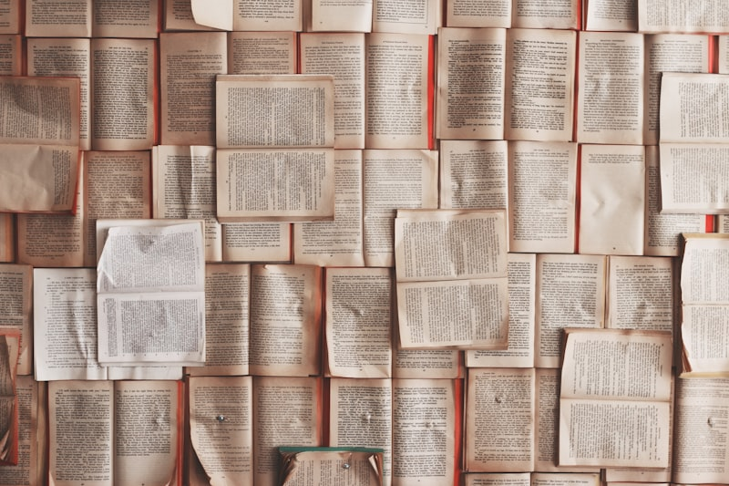

Thiên Tài và Sự Giáo Dục Từ Sớm
Chương 4: Thiên tài được sinh ra như thế nào? (DEEP Mode)

Thiên Tài Được Sinh Ra Như Thế Nào?
Phản biện Thuyết ưu sinh · Đề cao sức mạnh của môi trường · Vai trò của sự nhẫn nại và thói quen tập trung sớm

Bản đồ khái niệm Chương 4
Tóm tắt cốt lõi
Ý tưởng cốt lõi: Tư chất bẩm sinh (di truyền) chỉ cung cấp giới hạn tiềm năng (tố chất), còn giáo dục và hoàn cảnh quyết định mức độ hiện thực hóa tiềm năng đó. Thiên tài không chỉ do trời phú mà là kết quả của sự tập trung, lòng nhiệt huyết thắp lên từ thơ ấu và tính nhẫn nại phi thường.
- Nghiên cứu thực địa: Thống kê của Hiệp hội tương trợ trẻ em New York (87% trong 28.000 đứa trẻ mồ côi/nghèo khó thành đạt khi được nuôi dạy tốt). Ch 4 · §2
- Giai thoại vĩ nhân: Buffon sửa bản thảo 11 lần, Goethe viết Faust mất 14 năm; Liebig, Darwin, Newton, Napoleon đều là những học sinh "dốt nát" ở trường. Ch 4 · §4, §9
Bản chất và giáo dục
Bài học rút ra
-
01Môi trường và giáo dục có sức mạnh vượt lên trên di truyềnTại sao: Khảo sát 28.000 trẻ mồ côi bần hàn của Hiệp hội tương trợ New York cho thấy 87% thành đạt khi được nuôi dưỡng trong môi trường gia đình nông thôn lành mạnh. Ch 4 · §2
Áp dụng: Đừng bao giờ đổ lỗi cho "gen di truyền xấu"; hãy tập trung tạo dựng môi trường gia đình nề nếp và giàu tri thức. -
02Tố chất bẩm sinh chỉ là tiềm năng vô hìnhTại sao: Khác với tài sản hữu hình, khả năng di truyền là vô hình. Nếu không được rèn luyện đúng phương pháp, trẻ có tư chất ưu việt (80-90 phần) cũng sẽ thoái hóa thành người tầm thường. Ch 4 · §3
Áp dụng: Tránh tâm lý chủ quan khi thấy con thông minh sớm; cần liên tục khuyến khích con nỗ lực và tập trung. -
03Bảo vệ ngọn lửa đam mê và sự tập trung từ thơ ấuTại sao: Trẻ em bẩm sinh có khả năng tập trung cao độ khi chơi đùa, nhưng người lớn thường thô bạo dập tắt đam mê ("dẫm nát mầm cây mới nhú"). Ch 4 · §6
Áp dụng: Khi thấy con đang chăm chú quan sát hoặc chơi đùa, hãy để yên cho con tập trung, tuyệt đối không cắt ngang một cách vô lý. -
04Kích thước não bộ không quyết định trí thông minhTại sao: Nghiên cứu giải phẫu cho thấy não của các thiên tài như Pascal hay Liebig hoàn toàn bình thường hoặc thậm chí nhỏ hơn người thường. Điểm khác biệt là số lượng và chất lượng các "mối nối" (khớp thần kinh). Ch 4 · §11
Áp dụng: Kích thích đa giác quan sớm cho con thay vì lo lắng về các chỉ số thể chất như vòng đầu.
Trường phái tranh luận sinh học và hoàn cảnh
Trường phái Tố chất di truyền (Rousseau / Galton)
• Nhà tư tưởng: Rousseau (Emile - ví dụ hai con chó cùng mẹ nhưng một con khôn, một con
dại), Galton (Thuyết Ưu sinh).
• Luận điểm: Số phận và năng lực trí tuệ của con người hoàn toàn do bẩm sinh quyết định,
giống như màu mắt hay nhóm máu.
• Đề xuất xã hội: Khuyến khích người ưu tú sinh nhiều con, người kém cỏi sống độc thân. Coi
nhẹ giáo dục sớm. Ch 4 · §1, §2
Trường phái Hoàn cảnh & Giáo dục (Pestalozzi / Helvetius)
• Nhà tư tưởng: Pestalozzi (ngụ ngôn hai con ngựa), Helvetius (phủ nhận hoàn toàn tố chất,
mọi trẻ em sinh ra như nhau).
• Luận điểm: Hoàn cảnh sống và đặc biệt là sự giáo dục những năm đầu đời quyết định việc
trẻ thành thiên tài hay kẻ dốt nát.
• Dung hòa của cha Witte: Tố chất di truyền có thực (từ 10 đến 100) nhưng giáo dục quyết
định mức độ phát huy tố chất đó. Ch 4 · §1, §3
Thực chứng: 28.000 đứa trẻ mồ côi New York
• Kết quả: 87% thành đạt. Trong đó có Thống đốc Alaska, Thống đốc Dakota, 2 Hạ nghị sĩ bang, 35 luật sư, 24 mục sư, 19 bác sĩ, và hàng ngàn doanh nhân thành đạt.
• Bằng chứng phản bác di truyền: Hậu duệ đời thứ 9 của Marks Juke (gia tộc tội phạm/nghèo khổ khét tiếng) khi được nhận nuôi tốt từ sớm đã học rất giỏi và đầy triển vọng. Ch 4 · §2
Lao động kiên nhẫn và Cần cù phi thường
Bí quyết của thiên tài: Sự cần cù, nhẫn nại và nỗ lực phi thường vượt lên trên tài năng bẩm sinh.
Tính nhẫn nại phi thường (Nhiều năm làm việc):
• Goethe: Mất 14 năm ròng rã để hoàn thành tác phẩm Faust.• Buffon: Chỉnh sửa bản thảo Các kỷ nguyên của tự nhiên tới 11 lần mới công bố.
• Montesquieu: Tốn 25 năm để viết tác phẩm Tinh thần luật pháp.
• Harvey: Cần 26 năm nghiên cứu tuần hoàn máu ở động vật.
• Newton: Giải thích phát minh nhờ "suy nghĩ không ngừng". Ch 4 · §4
Tập trung cao độ (Ý chí sắt đá):
• Spinoza: Bình thản mài thấu kính trong căn phòng thuê dù bên ngoài chiến tranh Paris loạn lạc.• Palissy: Quên ăn quên ngủ miệt mài thử nghiệm chế tạo đồ gốm suốt 18 năm.
• Napoleon & Mozart: Luôn dành 100% tâm trí suy nghĩ về chiến thuật và âm nhạc ở mọi nơi, mọi lúc.
• Dalton: Tuyên bố thành quả là do làm việc chăm chỉ chứ không phải tài năng bẩm sinh. Ch 4 · §4
Huyền thoại về đứa trẻ học kém thuở nhỏ
Huyền thoại về "Đứa trẻ dốt nát": Nhiều vĩ nhân có kết quả học tập rất tệ thuở nhỏ.
Những học sinh yếu kém lịch sử:
• Liebig: Bị hiệu trưởng cười nhạo khi muốn làm nhà hóa học và bị cha bắt nghỉ học đi làm nghề thuốc.• Carl von Linné: Hiệu trưởng khuyên cha nên cho con nghỉ học sớm để làm lao động chân tay.
• Darwin: Cha mắng lười học, lêu lổng suốt ngày và làm ô danh dòng họ.
• Newton & Heine: Bị coi là đần độn, bị lưu ban nhiều lần; Heine cực ghét nề nếp nhà trường.
• Napoleon & Wellesley: Napoleon chỉ xếp hạng 42 khi tốt nghiệp; Wellesley bị mẹ gọi là "đồ bỏ đi". Ch 4 · §9
Lý giải nguyên nhân (Tại sao học kém?):
• Lệch hướng tập trung: Họ dồn toàn bộ năng lượng vào lĩnh vực đam mê duy nhất (ví dụ Babbage mải sáng chế, Emerson chỉ đọc văn học, Pascal say mê toán học) và sao nhãng các môn học ép buộc khác ở trường.• Tránh dập tắt đam mê: Nhà trường rập khuôn yêu cầu học sinh học tốt mọi môn một cách máy móc, vô tình làm thui chột tính sáng tạo tự nhiên. Ch 4 · §10
Kích thước não bộ hay Mối nối liên kết?
Bí ẩn cấu tạo não bộ: Kích thước vs. Mối nối tế bào thần kinh
Khảo sát thực tế kích thước não bộ:
• Không có sự tương quan tuyệt đối: Não của các thiên tài như Byron, Cuvier, Turgenev lớn hơn người thường; nhưng não của Liebig, Dante, Housman lại nhỏ hơn mức trung bình.• Nhận định của Hansemann: Khối lượng và kích thước não không phải là dấu hiệu nhận biết của thiên tài. Ch 4 · §11
Yếu tố quyết định thật sự:
• Diện tích bề mặt và Mối nối thần kinh (Synapses): Trí tuệ phụ thuộc vào mật độ liên kết giữa các tế bào thần kinh (khớp thần kinh).• Tác động của giáo dục sớm: Kích thích trí tuệ sớm giúp duy trì và tối ưu hóa các mối nối này trước khi chúng bị cắt tỉa do không sử dụng. Ch 4 · §11
Bối cảnh Thuyết ưu sinh & Khoa học tương tác GxE
1. Sự trỗi dậy của Thuyết Ưu sinh (Eugenics) đầu thế kỷ 20
• Bối cảnh lịch sử: Francis Galton công bố thuyết ưu sinh cuối thế kỷ 19, tạo ra trào lưu
chính trị-khoa học xem năng lực con người là di truyền tuyệt đối.
• Mối nguy xã hội thời đó: Xem nhẹ giá trị giáo dục, cổ súy sự phân biệt chủng tộc và bỏ
mặc các tầng lớp nghèo khó vì cho rằng họ "mang gen di truyền xấu".
• Vai trò của chương 4: Nỗ lực của tác giả nhằm phá bỏ tư duy định mệnh sinh học, nhấn
mạnh giáo dục sớm có thể giải phóng tài năng từ những nguồn gốc bần hàn nhất. Ch 4
· §2, §3
2. Nhìn từ năm 2026: Khoa học tương tác Gen - Môi trường
• Di truyền học biểu hiện (Epigenetics): Nghiên cứu hiện đại chỉ ra gen di truyền không
phải là một "bản án cố định". Các kích thích từ môi trường sống (tình cảm, sự dạy dỗ, dinh dưỡng) có thể
"bật" hoặc "tắt" các gene biểu hiện trí tuệ và cảm xúc của trẻ.
• Khái niệm "Dẻo não bộ" (Neuroplasticity): Khẳng định não trẻ sơ sinh dẻo dai vô cùng.
Sự phong phú của môi trường giáo dục gia đình thực sự thay đổi cấu trúc vật lý của não bộ, minh chứng cho
tầm nhìn vượt thời gian của cha Witte và Pestalozzi.
Đọc hiểu đa tầng chương 4
Thiên tài không phải bẩm sinh hoàn toàn mà phụ thuộc lớn vào lòng say mê và tính kiên nhẫn. Sự giáo dục sớm tạo cơ hội cho tố chất được phát huy tốt nhất, bác bỏ niềm tin phiến diện của thuyết ưu sinh. Ch 4 · §3, §4
Sử dụng phương pháp đối lập (Rousseau vs. Pestalozzi, Galton vs. Hiệp hội tương trợ New York) và so sánh nhiều giai thoại lịch sử về tinh thần lao động cần cù của vĩ nhân để thuyết phục người đọc về sức mạnh của giáo dục gia đình.
Viết vào đầu thế kỷ 20, khi ngành Tâm lý học kiểm chứng thực nghiệm còn sơ khai. Tác giả nỗ lực chứng minh giáo dục sớm an toàn cho sức khỏe thần đồng qua thống kê tuổi thọ bình quân (65-67 tuổi) để trấn an dư luận hoài nghi thời bấy giờ.
Điểm phản biện: Thống kê của Hiệp hội tương trợ trẻ em New York (87% thành công) có thể gặp "thiên kiến sống sót" và việc chọn lọc gia đình nhận nuôi tốt đóng vai trò như một bộ lọc kép, không hoàn toàn do tự thân giáo dục sớm của cha mẹ đẻ.
Ứng dụng vào thời đại EdTech: Dùng thiết bị thông minh không phải để nhồi nhét lý thuyết mà để cá nhân hóa "đam mê độc bản" của trẻ, theo dõi thời lượng trẻ tự nguyện tập trung sâu vào một chủ đề để phát triển thiên hướng.
Thẩm định luận cứ và Đối chiếu khoa học hiện đại
• Lý thuyết "Cố ý luyện tập" (K. Anders Ericsson): Quy tắc 10.000 giờ nhấn mạnh tầm quan trọng của việc luyện tập có chủ đích và có hệ thống từ sớm để đạt mức độ xuất chúng, ủng hộ trực tiếp quan điểm của Buffon và Goethe trong sách.
Nghiên cứu di truyền học hành vi hiện đại chỉ ra di truyền cung cấp một "phạm vi phản ứng" (range of reaction) cho trí tuệ. Ví dụ, gen quy định chỉ số IQ của một người nằm trong khoảng 100 đến 130. Việc người đó đạt mức 100 hay 130 hoàn toàn phụ thuộc vào kích thích từ môi trường giáo dục sớm trong gia đình. Do đó, giáo dục sớm không phủ nhận gen mà là công cụ duy nhất để khai thác tối đa tiềm năng của gen.
Tư duy cố định vs Tư duy phát triển
Tư duy cố định (Fixed Mindset - Định mệnh sinh học)
• Niềm tin: Trí thông minh và tài năng là bẩm sinh và cố định. Học sinh giỏi học ít vẫn
giỏi, học sinh kém nỗ lực cũng vô ích.
• Tác hại: Trẻ thông minh sợ thất bại nên không dám thử thách mới; trẻ kém tự ti buông
xuôi.
• Hệ quả: Thui chột khả năng tự rèn luyện và thói quen vượt khó.
Tư duy phát triển (Growth Mindset - Carol Dweck)
• Niềm tin: Trí tuệ có thể phát triển thông qua nỗ lực, học hỏi phương pháp đúng và sự kiên
trì.
• Tác dụng: Trẻ xem thất bại là cơ hội học hỏi, không sợ thử thách và kiên trì theo đuổi
đam mê.
• Hệ quả: Rất phù hợp với luận điểm "thiên tài là sự nhẫn nại và nỗ lực không ngừng" của
Goethe và Newton.
Lộ trình rèn luyện sự tập trung sâu
Hành động cụ thể theo lộ trình:
• Pha 1 (0 - 1 tuổi): Loại bỏ tiếng ồn xung quanh phòng trẻ. Tránh bật tivi hay điện thoại liên tục gây nhiễu loạn khả năng tập trung thính giác bẩm sinh của trẻ sơ sinh.• Pha 2 (1 - 3 tuổi): Quan sát tỉ mỉ những thời điểm con tập trung chơi đồ chơi. Thay vì ngắt lời con để cho ăn hay gọi đi tắm, hãy chờ con kết thúc chu trình tập trung tự nhiên.
• Pha 3 (3 - 5 tuổi): Khi con gặp khó khăn (ví dụ vẽ hỏng, xếp hình đổ), khuyến khích con thử lại bằng thái độ vui vẻ nhẹ nhàng. Rèn sự kiên nhẫn qua các hoạt động xâu vòng hạt, xếp hình gỗ phức tạp.
• Pha 4 (5 tuổi+): Chấp nhận việc con có thể học kém một vài môn học phụ ở trường để tập trung thời gian phát triển chuyên sâu một môn mà con có đam mê đặc biệt.
⚠️ Sai lầm "Dẫm nát mầm non" cần tránh:
• Mua quá nhiều đồ chơi: Khi trẻ có quá nhiều đồ chơi cùng lúc, trẻ sẽ nhanh chán, chơi hời hợt và mất khả năng tập trung sâu vào một món.• Can thiệp thô bạo: Liên tục sửa lỗi hoặc giành làm hộ trẻ khi thấy trẻ làm chậm. Điều này tước đoạt tính tự lập và lòng say mê tự khám phá.
• Ép học đều mọi môn: Ép trẻ phải đạt điểm số cao đồng đều ở trường, vô tình triệt tiêu cơ hội phát triển vượt trội của thiên tài học lệch.
Kế hoạch hành động của cha mẹ
-
Quan sát và ghi chép "Thời gian tập trung sâu" của conTheo dõi trong tuần này: Đếm số phút con có thể ngồi chơi tự do không gián đoạn. Ghi lại món đồ chơi hoặc hoạt động giúp con duy trì sự tập trung lâu nhất. Ch 4 · §6
-
Khen ngợi nỗ lực thay vì khen tố chấtCam kết trong một tháng tới: Thay đổi 100% cách phản hồi khi con làm tốt một việc. Tuyệt đối không dùng từ "Con thông minh thế" mà chuyển sang "Mẹ khen con đã rất cố gắng tự hoàn thành". Ch 4 · §4
-
Hạn chế số lượng đồ chơi xuất hiện cùng lúcThu dọn bớt đồ chơi của con, chỉ để lại tối đa 3 món đồ chơi kích thích trí tuệ trong tầm mắt của trẻ mỗi ngày để tăng mật độ và thời lượng tập trung tự nhiên vào một hoạt động. Ch 4 · §6